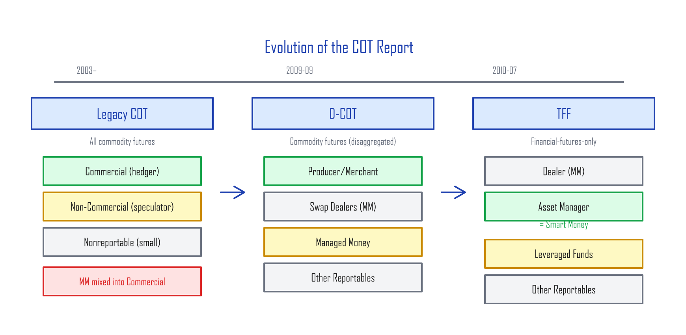
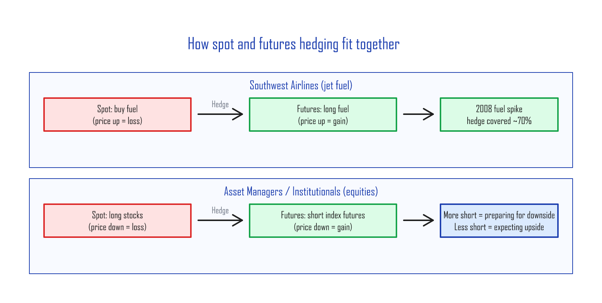
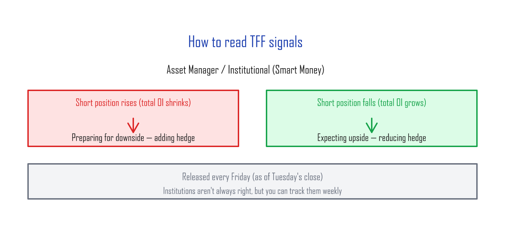
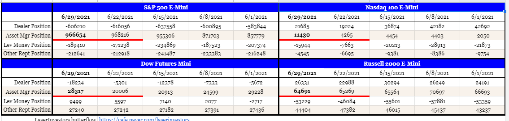
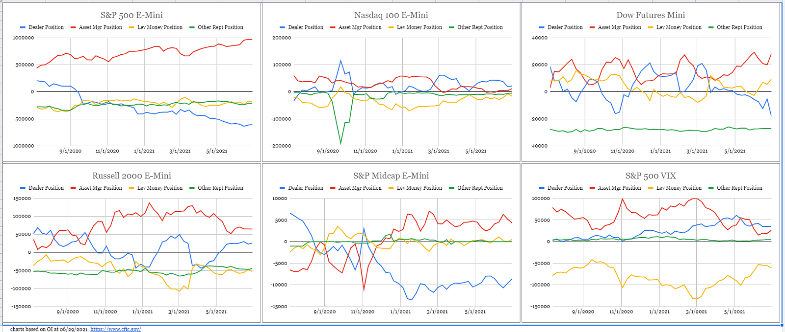
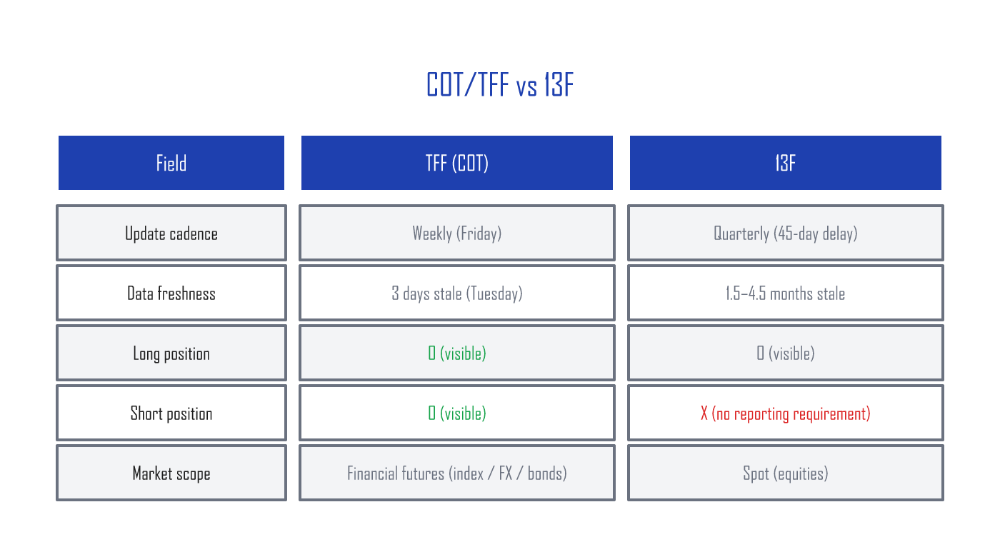

The COT Report — Reading the Spot Market Through the Futures Market¶
What the COT Report is¶
In the futures market (futures = a contract to buy or sell at a set price on a future date), participants above a certain size have to report their open interest (OI = the number of contracts that are still open and haven't been closed out) to the CFTC (Commodity Futures Trading Commission) every week, as of the Tuesday close. Reportable participants file CFTC Form 40, declaring the business purpose of their futures activity. CFTC staff use that filing to assign each participant to a business category.
The weekly aggregate of those reported positions — broken down by category, with long positions (bets that price will rise) and short positions (bets that price will fall) summed within each — is called the COT (Commitments of Traders) Report, and it's released every Friday at 3:30 PM Eastern.
How the COT Report has evolved — Legacy → D-COT → TFF¶
The report has been through three generations.

Legacy COT — the original three categories¶
The legacy report split participants into three buckets:
- Commercial — participants who actually buy and sell the physical underlying (hedgers — positions taken to offset risk in the cash business)
- Non-Commercial — large speculators with no spot business
- Nonreportable — small participants below the reporting threshold
The problem: market makers (MMs) — who don't trade the physical product, but stand in between every buyer and seller as the perpetual counterparty — got bucketed into "Commercial." That diluted the Commercial signal beyond usefulness.
D-COT — separating the market makers (2009)¶
On September 4, 2009, the CFTC launched the Disaggregated COT (D-COT) report, which split participants into four cleaner buckets:
- Producer/Merchant/Processor/User — actual physical-market participants
- Swap Dealers — market makers
- Managed Money — short-term traders running the position for profit
- Other Reportables — other large participants
Once MMs were peeled out of "Commercial," the Producer/Merchant/Processor/User category started to mean something. Intuitively, the people who actually buy and sell the physical product are the group most likely to read the future price of that product correctly.
TFF — a COT report just for financial futures (2010)¶
On July 22, 2010, the CFTC launched the TFF (Traders in Financial Futures) report, which is a dedicated COT report for financial futures: currency futures, bond futures, and stock-index futures.
| Category | What it is |
|---|---|
| Dealer/Intermediary | Market makers |
| Asset Manager/Institutional | Pension funds, endowments, large institutional investors — what people call Smart Money |
| Leveraged Funds | Short-term traders, mostly hedge funds |
| Other Reportables | Other large participants (corporate treasuries, central banks, smaller banks, etc.) |
In the TFF report, Asset Manager/Institutional is the "smart money," and Leveraged Funds are sometimes called "dumb money."
A lesson from Southwest Airlines¶
To see how a Producer/Merchant actually uses futures, look at Southwest Airlines (LUV) — famous for hedging its jet-fuel costs in the futures market. As a real consumer of fuel, the airline participates in the futures market in the Producer/Merchant/Processor/User category.
The airline's business prefers fuel prices to fall, so you can think of the airline as carrying an inherent short position on physical fuel. To hedge that, when it expects fuel prices to spike, it opens long fuel-futures positions.
In 2008, Southwest had its long fuel-futures hedge in place ahead of time. When fuel prices spiked, the futures hedge covered roughly 70% of the cost increase. American Airlines (AAL), by contrast, had no fuel-futures hedge at all, swallowed the full price spike, and saw its financial position deteriorate dramatically.
If fuel prices had crashed instead, Southwest wouldn't have captured the windfall — but from a business-management perspective, the airline prefers a predictable, locked-in cost over an unpredictable swing in profitability.
Reading the report — institutional intent¶
The same logic that drives an airline's fuel hedge applies to equities. Institutional investors use the futures market to hedge their cash-equity exposure. They run a long position in the cash market (their stock holdings) and overlay a short futures position to dampen volatility.

The airline business wants fuel prices down, so it goes long fuel futures to hedge an upward spike. By the same logic:
Institutional investors want stock prices to go up, so by default they're long the cash market. When they expect prices to fall, they open short futures positions as a hedge.

Institutions don't get the future right every time, of course. But being able to track what they're doing on a weekly basis is genuinely useful information.


How TFF compares to 13F¶
There's another way to look at institutional positioning: the 13F filing. Every institutional investor must file a 13F with the SEC quarterly to disclose their long positions. (Shorts are not required.) 13Fs are due 45 days after quarter-end, so the longs you can see are roughly 1.5 to 4.5 months stale.
TFF, by contrast, updates weekly and shows both longs and shorts. It's a much fresher and more complete picture of institutional positioning.

Wrap-up — using COT in practice¶
COT/TFF is one of very few public datasets that lets you see institutional positioning every week. The takeaways:
- Track the trend in Asset Manager shorts week over week.
- Shorts piling up = institutions preparing for a drop. Shorts shrinking = institutions positioning for a rally.
- Much faster than 13F (weekly vs quarterly), and shows shorts that 13Fs don't.
- You can pull the data directly from cftc.gov, or get it visualized on Barchart.com and similar sites — or read it straight off this blog's home dashboard, where S&P 500 institutional positioning (Asset Manager short vs Leveraged Funds) refreshes automatically every week as a live value and chart.
One caveat: COT is a compass, not a clock. It points direction, not timing. Institutions are wrong sometimes, and the data is already 3 days old when you get it. The strongest use is in combination with other signals — VIX (the market's fear index), technical analysis, and so on.
Next: Fed Fund Futures and the CME FedWatch Tool — How rate-cut probabilities are computed